Катерина Медун
Відвідували багато садочків але підхід до малечі змогли знайти саме тут. Лабораторія маленьких геніїв - це, в першу чергу, професійна команда відкритих та добрих людей , яка по-справжньому любить малечу. Команда, в якій панує затишна та гармонійна атмосфера і яка кожен день створює маленьке свято для них. Щиро раджу♥️♥️♥️♥️
Аліса Крук
Відвідуємо садочок вже 4 роки. Дуже задоволені. Дитина ходить з задоволенням щодня. Ще дуже крута підготовка до школи . Після занять в садочку не потрібно додаткових підготовок. Дитина читає, пише , вміє рахувати.
Лілія Хомич
Зручне місце розташування. Комфортні умови для дітей. Хороші іграшки для самостійної гри. Та найцінніше те, що усі вихователі мають позитивний світогляд та ставляться до дітей як до маленьких особистостей, дають свободу для самовираження, та одночасно слідкують за дотриманням соціальних правил та норм. Атмосфера в садочку позитивна і це сприяє гармонійному розвитку дітей. Підготовка до школи з використанням цікавих кейсів. Різні майстер-класи для розкриття творчого потенціалу дитини. Екскурсії та тематичні заходи для пізнання навколишнього світу. Різноманітне здорове харчування. Також в теперішній час великою перевагою є і те, що мають хороше укриття, до якого спуститись за 30 секунд, і де, за потреби, діти перебувають в звичних умовах: іграшки, туалет, вода, тепло.
Світлана Чорна
Моя дитина відвідує старшу групу садочку Лабораторії маленьких геніїв. Дитина з радістю йде до садочку, у садочку чудово готують до школи (дитина уже вміє читати, додає, віднімає в т.д., англійська мова щодня і ще багато різних занять). Вихователь Оксана - прекрасний професіонал, усі працівники дуже привітні та доброзичливі.Рекомендую!
Олексій Лукʼянчук
З впевненістю скажу, що це найкращий садочок в якому ми були! Найкращі вихователі, які для дитини стають не лише наставником, а і другом! Донечка із задоволенням відвідує садочок, дуже засмучується якщо змушені залишитися вдома. Видно дуже великий прогрес у розвитку дитини, завжди цікаві та змістовні заняття, які батьки мають змогу побачити на фото та відео, які скидають вихователі. Дуже радію, що ми потрапили у Лабораторію маленьких геніїв 🥰🥰🥰
Анна Бункова
Відвідували розвиваючі заняття для малюків с сином влітку - дуже сподобався підхід виховательки до малечі - завжди підбадьорює, позитивна та творча і дуууже терпляча. цікаві заняття, багато корисних вправ на дрібну моторику та логіку. Зараз знаходимося за кордоном, але дуже сумуємо і як тільки повернемось, то обов'язково будемо ходити далі. Ціна за заняття цілком адекватна, двічі на тиждень по 50 хвилин.
Світлана Гончар
Чудовий заклад. Старша дитина відходила. Тепер молодший відвідує садок . Ціна адекватна в порівнянні з іншими приватними садочками. Тепла атмосфера, відношення до діток супер. Харчування достойне , нормальна кількість дітей, компетентні вихователі. А свята то взагалі одне задоволення!!! Вважаємо цей заклад своїм рідним.))) Маємо з чим порівнювати , оскільки відвідували інші садочки. Дякую адміністрації і вихователям. Так тримати !!! Рекомендую однозначно )!
Анастасія Мамчур
Хочу висловити щирі слова подяки вихователю Олені Олександрівні. За її щирість та доброту , індивідуальний підхід до діток. Наша малеча завжди із радістю та посмішкою біжить до садочка, що є дуже важливо для мене. Завжди привітний персонал. Дякую . Так тримати
Олег Радзієвський
В садочку є хороший дитячий майданчик - огороджений парканом та з гумовою плиткою - гуляти дітям безпечно, хороше збалансоване харчування для малечі. Задоволений відношенням вихователів та нянь до дітей. Хочу окремо відзначити роботу адміністраторів - завжди тримають в курсі подій та заходів у садочку, підтримують живе спілкування з батьками. Дякую за працю всьому колективу!
Лілія Хомич
Відвідували із синочком заняття «Мама і малюк». Дуже задоволена атмосферою, яка панує в кімнаті, та методикою проведення занять. Дитина на кожне занятті йшла із задоволенням та дуже прихильно ставилась до Альони, дівчини яка проводить їх. Щиро дякую за професіоналізм та людяність персоналу закладу🙏
Марія Вельська
Моя донька ходила до вас на заняття з Підготовки до школи. Ми дуже вдячні нашому викладачу Світлані за якісну підготовку дитини. На заняття вона ходила із задоволенням. Дякуємо за такий чудовий заклад і професіоналів своєї справи))))
Альона Захарчук
Найкращий садочок!!! Спочатку почала навчатись старша донька. Кожного дня бігла з радістю в садочок. Тепер вона випускниця і вже цього року йде до школи. Якісна підготовка до школи, все в ігровій формі, моя дитина з радістю навчалась і їй розвинули цікавість до навчання. І вже рік із превеликим задоволенням садочок відвідує моя молодша донька. Їй було 2 роки, коли ми вперше прийшли до садочка. І вихователі зробили все щоб період адаптації пройшов легко. Чудове харчування, донька із задоволенням все їсть))) Рекомендую всім!!!!!
Молодих Юлія
Обидві сини відвідують садочок. Зараз старший а школі, але ходить на малювання, логопеда і на цікаві заняття по суботах в Лабораторію маленьких геніїв. Дуже гарне ставлення до дітей, професійні педагоги, адекватна вартість за садочок і заняття.Раджу усім!
Наталія Близнюк-Рибій
Рекомендую цей класний, яскравий, позитивний, креативний, сучасний дитячий садочок!!! Синочок відвідує садочок вже більше року, перед цим починали із розвиваючих занять з 1.5 років. Мені як мамі в цьому садочку подобається все, і підхід до діток, і рівень якості виховання та навчання, і підбір вихователів, викладачів та іншого персоналу, і дизайн садочку та його забезпеченість іграшками, навчальними матеріалами, ігровий майданчик. Все це на найвищому рівні!!!!
Олександра Поворознюк
Хочу поділитись власним досвідом. Моєму сину Марку 4 роки і ми відвідували цього року лабораторію влітку. Ми відвідуємо свій державний садочок і все було добре. Але цього літа у черговому садочку при зміні вихователів і у збірній групі за 3 дня у Марка відбилось все бажання ходити. На слово «садочок» в сина починалась істерика. Не довго думаючи, ми звернулись до Лабораторії. Сказати, що нам сподобалось - це нічого не сказати. За перші дні у Марка прекрасний настрій, йому цікаво, він постійно чимось ділиться, приносить роботи. Уроки англійської - це любов. Я, як мама, задоволена на 100%. Підхід вихователів Ольги та Юлії досконалий. Постійні відео з занять та фото завжди заспокоюють тривожне материнське серце)тепер Марк хоче ходити тільки в Лабораторію. Дякуємо!
Людмила Смаглій
Добрий день, шановний колективе! Хочу передати вам слова вдячності за вашу працю. Ви молодці, завжди усміхнена і позитивна адміністратор та розумні і креативні вихователі. Ваша кропітка праця помітна з першого візиту до центру, починаючи із чудового та затишного інтер'єру, ідеальної чистоти приміщень і закінчуючи заняттями, проведеними справжніми майстрами своєї справи. Дітки із великим задоволенням поспішають до вас на заняття, які завжди цікаві, веселі та різноманітні. Результат вашої праці помітний уже після першого відвідування. А ось свята, це взагалі окрема тема. Ваша акторська майстерність та вдало підібрані підібрані персонажі просто вражають. Що уже говорити про дітей, якщо ми, батьки, поринаючи у казкову атмосферу, почуваємо себе дітлахами. Велике вам усім ДЯКУЮ !
Людмила Татарчук
Ми записались до цієї школи у вересні одразу на 3 гуртки: підготовка до школи, англійська мова та лєго-конструювання. Дуже подобається професіоналізм викладачів та серйозний підхід до навчання діток. Відчувається, що дитина тут не просто проводить свій час, а інтенсивно збагачується новими знаннями та навичками. Низький уклін та подяка викладачам за те, що знайшли підхід до моєї непростої дитини!!! Також ми отримали приємний бонус - 5% знижка на усі заняття.
Юлія Незвінська
Чудовий навчальний заклад, неперевершені, компетентні, професіональні педагоги та адміністрація, привітний персонал. Завжди знаходять спільну мову з дитиною. Я дуже задоволена. Щодо занять, можу точно сказати, що сприяють всебічному розвитку дитини. Мій малюк із задоволенням іде до школи розвитку, з радістю показує чим займався, чудово прогресуюча творча і розумова праця у мого синочка. Розвитку вам і процвітання! Раджу всім цей заклад.


 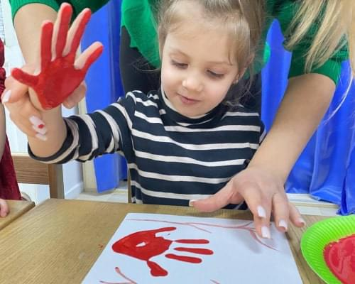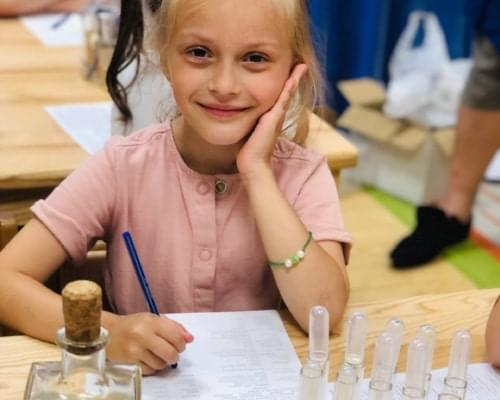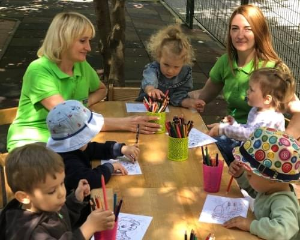
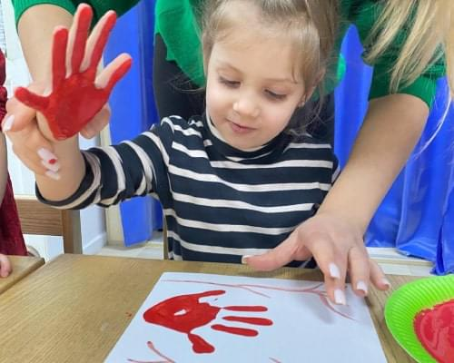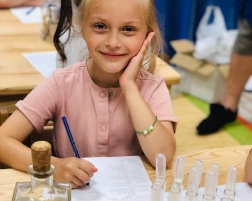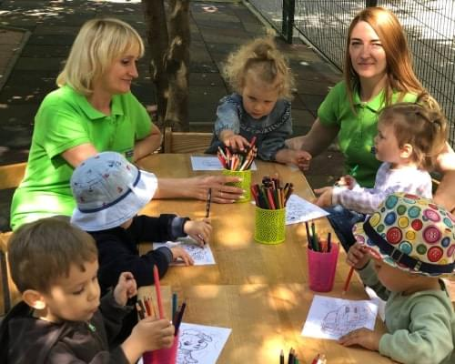
 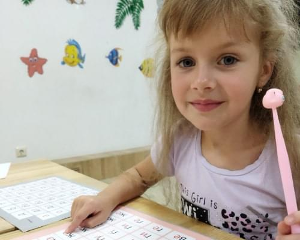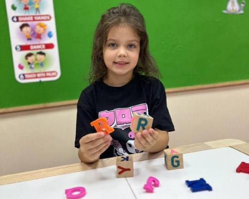
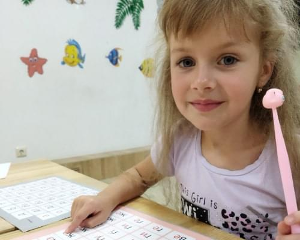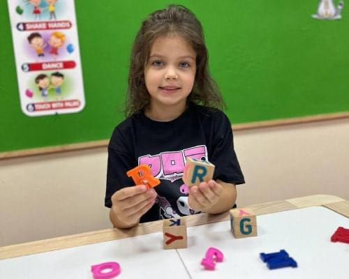 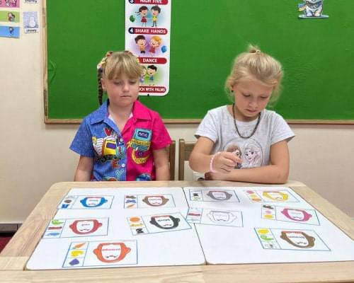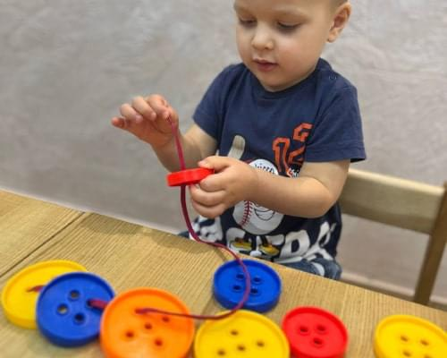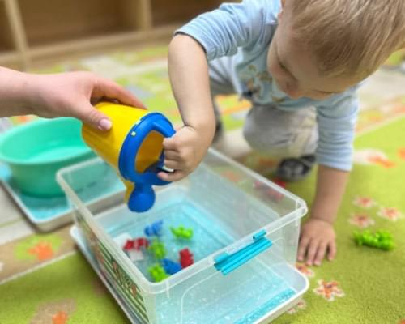
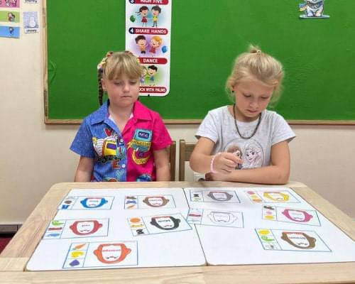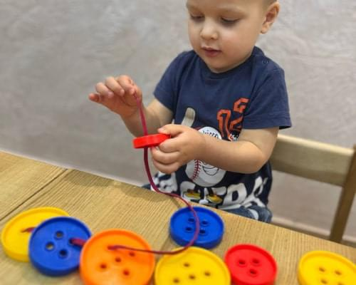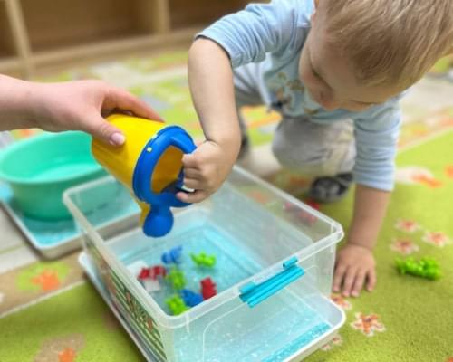
 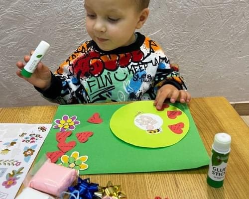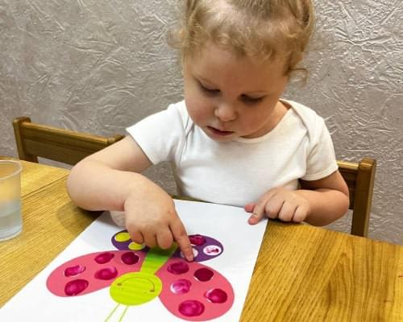
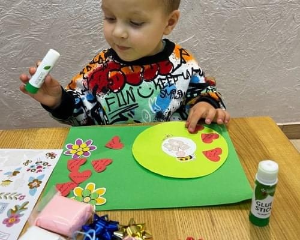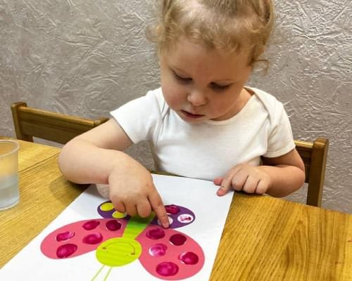 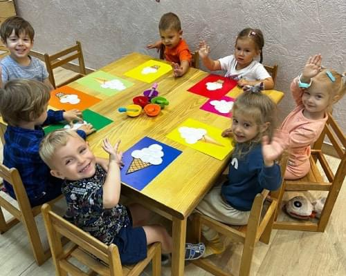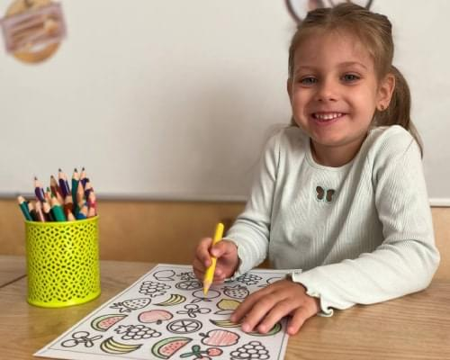
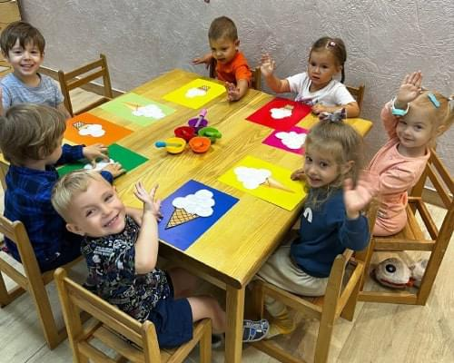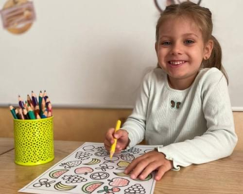
 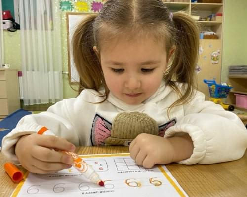
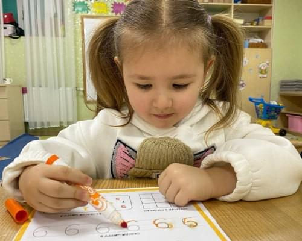
 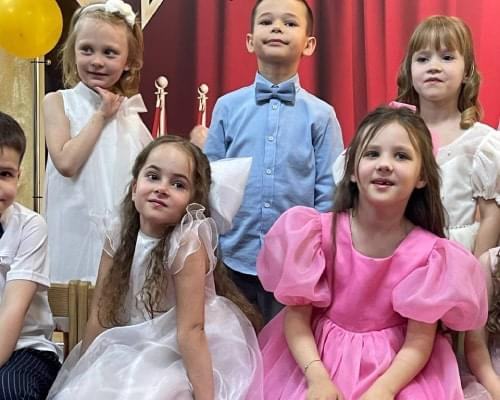
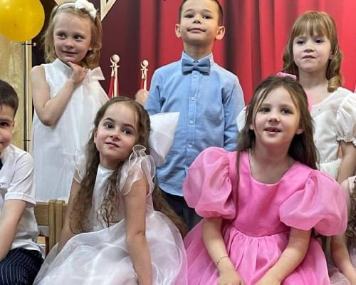


 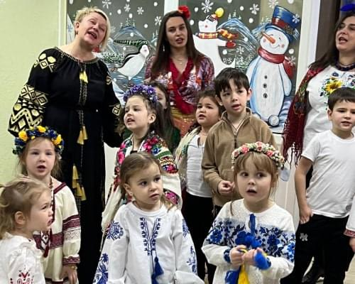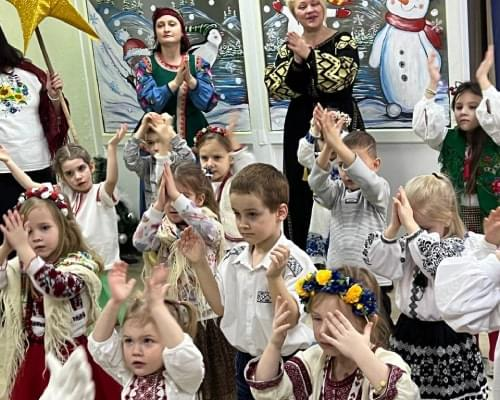
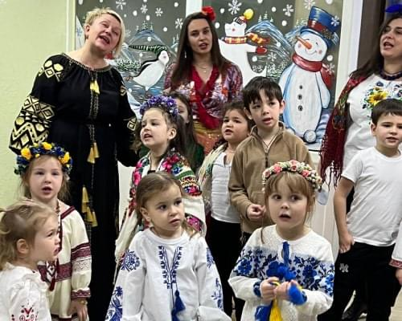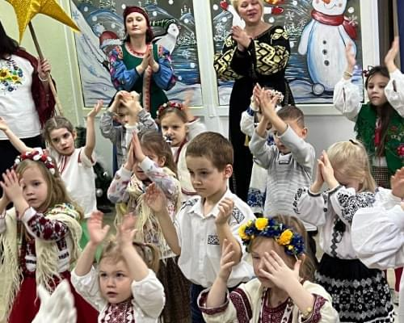
 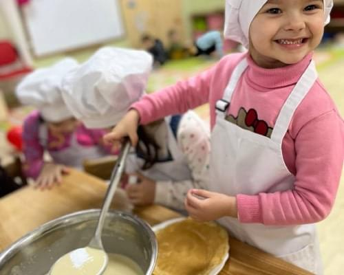
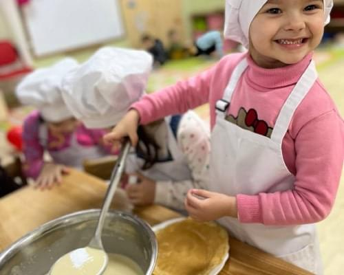


 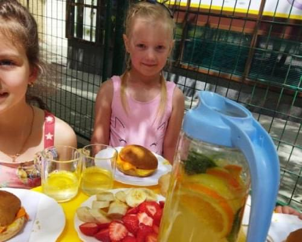
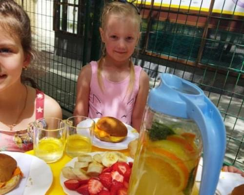
 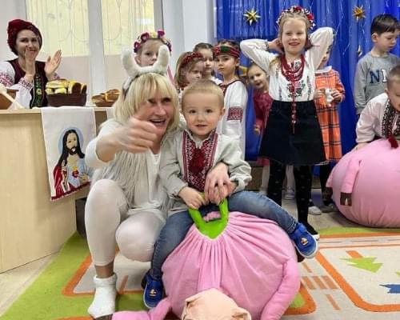
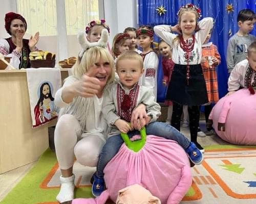

 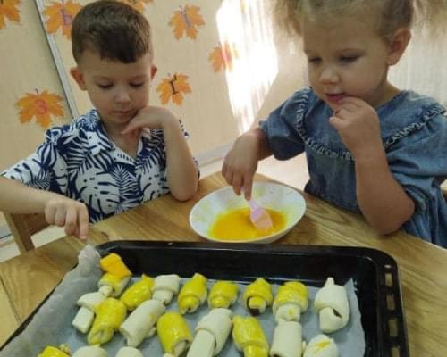
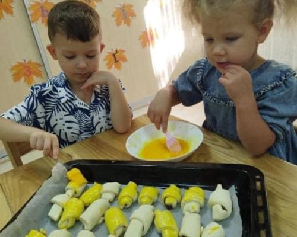 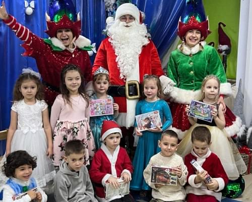
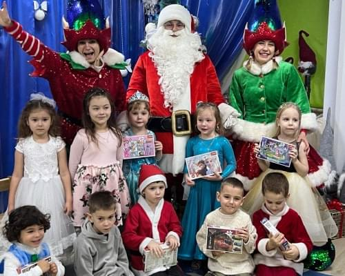
 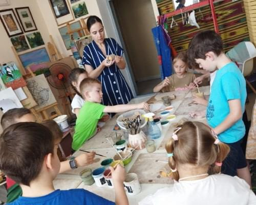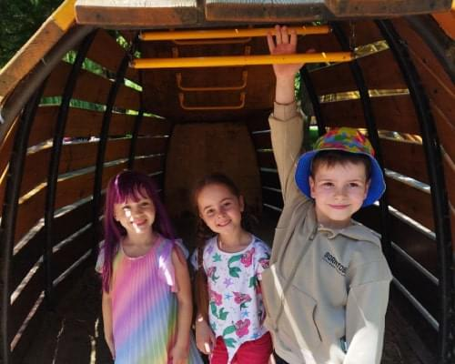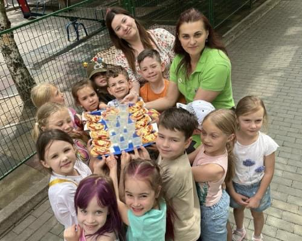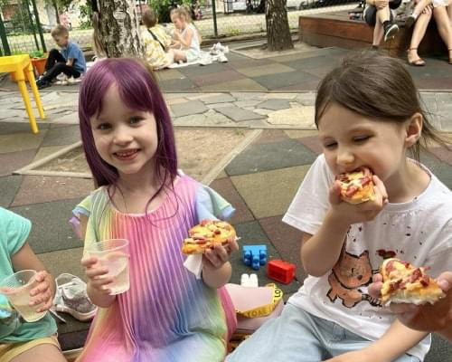
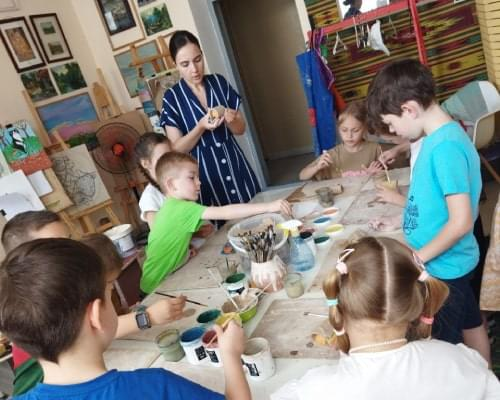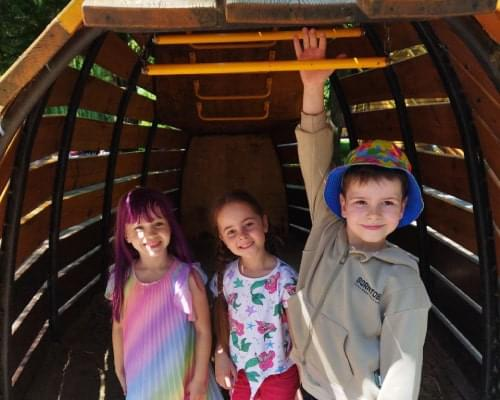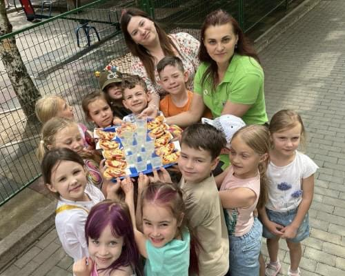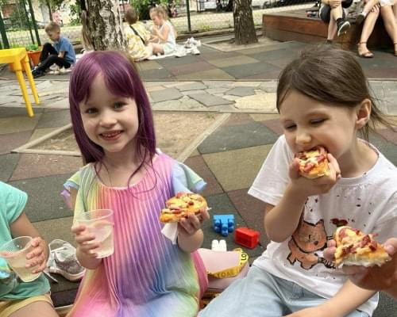
 


 
 


 
 
